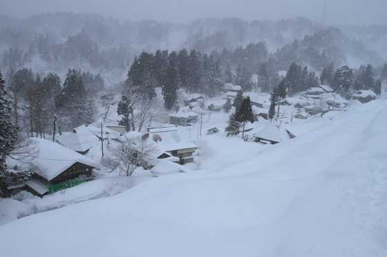
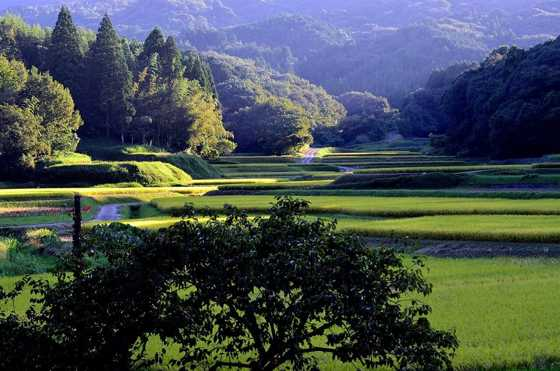
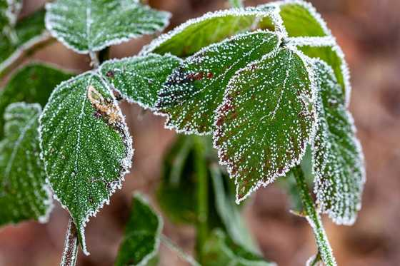
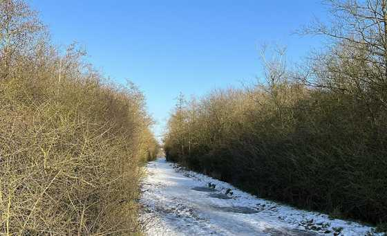
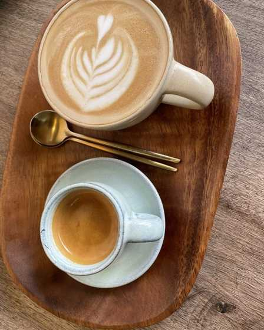
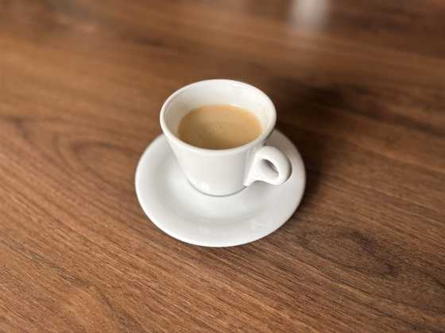
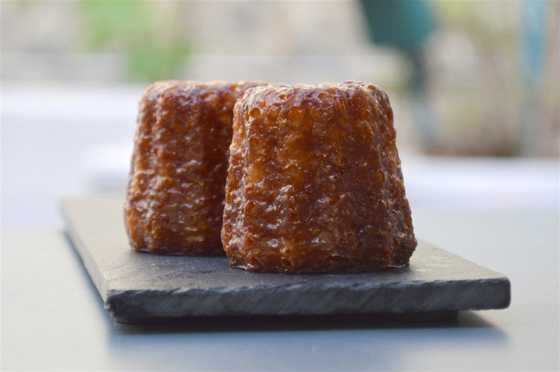
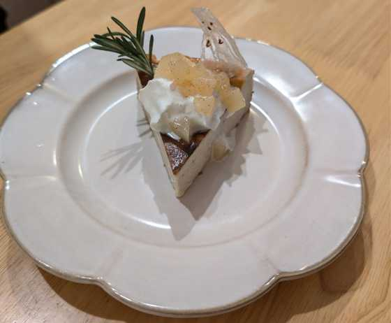

喫茶ジュタベール
体にしっくり、心にじんわり。大きな窓の向こうの田園を眺めながら。
写真は十日町市の雪の集落のイメージ(フリー素材)
お店について
十日町市馬場にある、2022年3月オープンの喫茶店です。
紹介記事によると、お店のコンセプトは「体にしっくり、心にじんわり」。体に優しい飲み物や食べ物と、くつろげる憩いの場を届けたいという思いから生まれました。お菓子や料理は、毎日食べても飽きない「お母さんの味」が目標とのことです。
開業のきっかけは、隣にある産婦人科医院の待ち時間に気軽に立ち寄れる場所があれば、という考えだったと紹介されています。妊婦さんも飲めるカフェインレスコーヒーなどもあるそうです。
大きなガラス窓の向こうに田園風景が広がり、吹き抜けのような高い天井のある店内と紹介されています。
ハンドメイド雑貨の委託販売や、季節のイベントも行われているようです。
上記は外部の紹介記事に基づく内容で、記事掲載時点の情報です。店名「ジュタベール」の意味は確認できていません。




メニュー
紹介記事で触れられていたものです。提供状況・価格・詳細は準備中(お問い合わせください)。






写真はイメージで、実際のメニューとは異なります。
口コミ(イメージ例)
病院の帰りにふらりと寄りました。窓の外を眺めながら、ほっと一息つけました。
やさしい味のカレーに、食後のカヌレ。気取らない雰囲気で、ゆっくり過ごせます。
お仕事の合間の休憩にぴったり。また来たくなる居心地のよさでした。
上の3件は制作側が作成したイメージで、実在のお客様の声ではありません。
アクセス・お店の情報
- 屋号
- 喫茶ジュタベール
- 所在地
- 〒949-8551 新潟県十日町市馬場丙1551-1
- 電話
- 準備中
- 営業時間
- 準備中
- 定休日
- 準備中
- @jutabe1551
写真クレジット
- snow-town.jpg:Imai / CC BY-SA 2.1 jp / Wikimedia Commons / 新潟県十日町市小白倉
- snow-forest.jpg:Jean Beaufort / CC0 / Wikimedia Commons / 撮影地不明
- terraced-fields.jpg:Yuji Sakamoto / CC BY-SA 3.0 / Wikimedia Commons / 福岡県南部付近
- frost-leaves.jpg:Dietmar Rabich / CC BY-SA 4.0 / Wikimedia Commons / ドイツ・デュルメン
- snow-path.jpg:Jonathan Hutchins / CC BY-SA 2.0 / Wikimedia Commons / 英国スタッフォードシャー
- latte.jpg:Tilak Bahadur Karki / CC0 / WordPress Photo Directory / 撮影地不明
- cup.jpg:Ludwig You / CC0 / WordPress Photo Directory / 撮影地不明
- canele.jpg:DimiTalen / CC0 / Wikimedia Commons / 撮影地不明
- cheesecake.jpg:Eleonora Anzini / CC0 / WordPress Photo Directory / 撮影地不明
- cake-plate.jpg:Alina Kakshapati / CC0 / WordPress Photo Directory / 撮影地不明
- pudding.jpg:Zain Abdullah / CC0 / WordPress Photo Directory / 撮影地不明
- chiffon.jpg:chooyutshing / パブリックドメイン(PDM 1.0) / Flickr / 撮影地不明
- basque.jpg:Andy Li / CC0 / Wikimedia Commons / 撮影地不明
縮小・切り抜きなどの加工をしています。ライセンス詳細: creativecommons.org